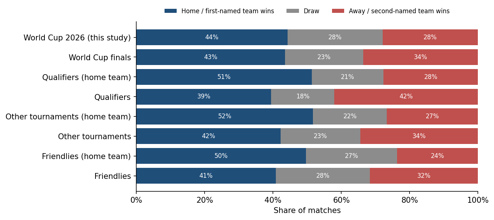
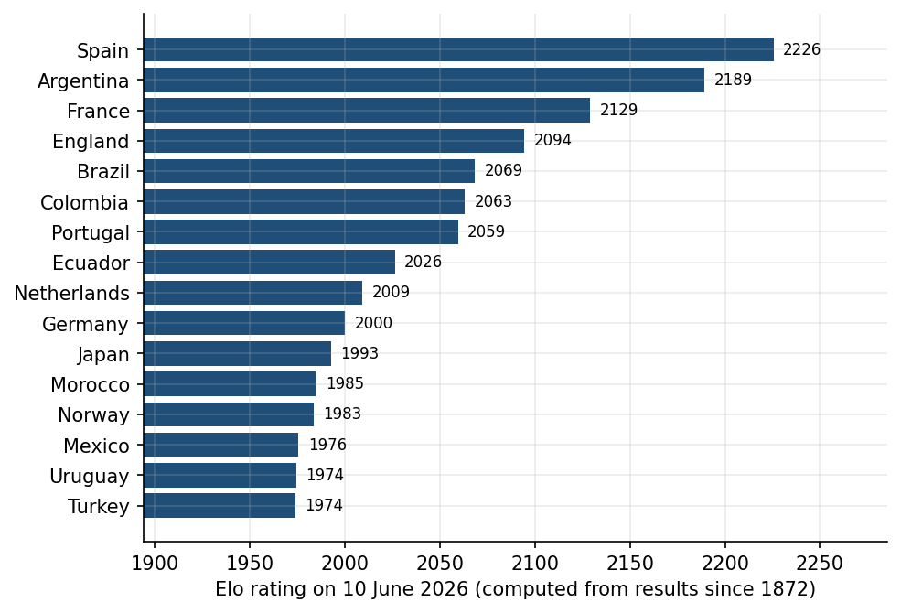
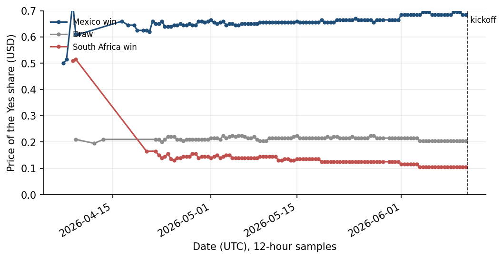
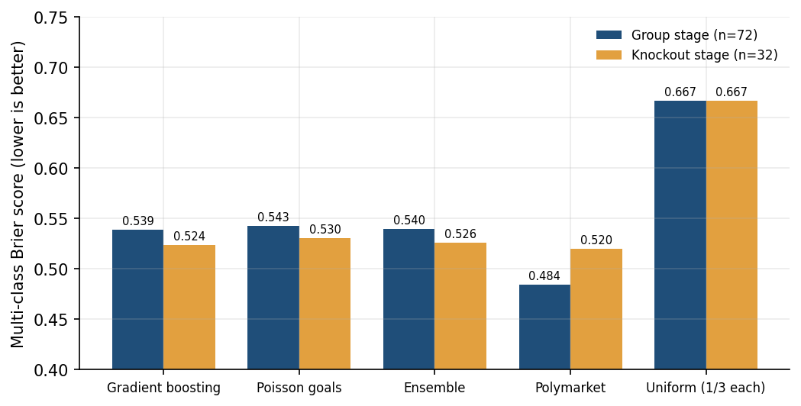
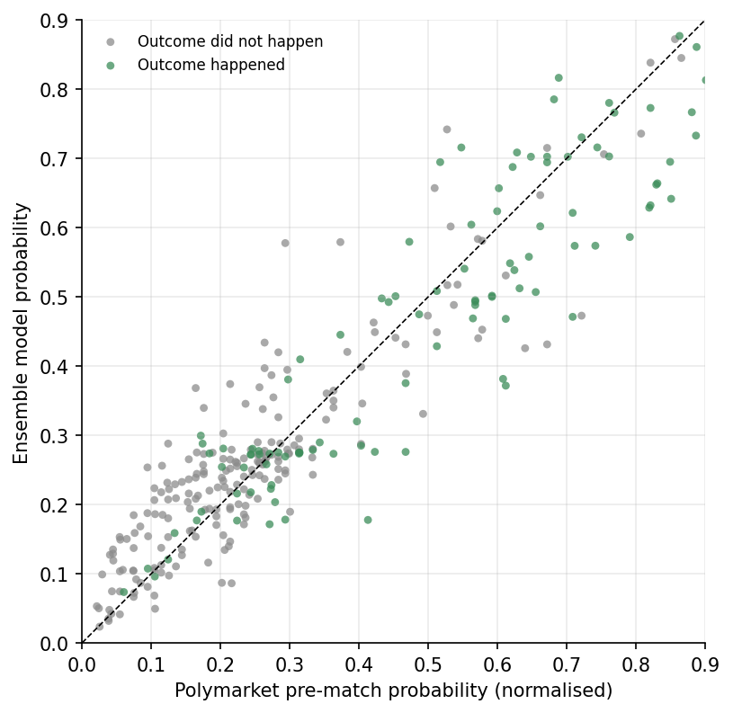
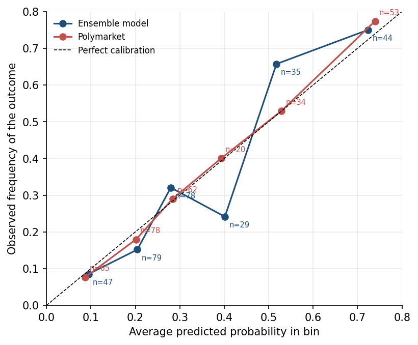
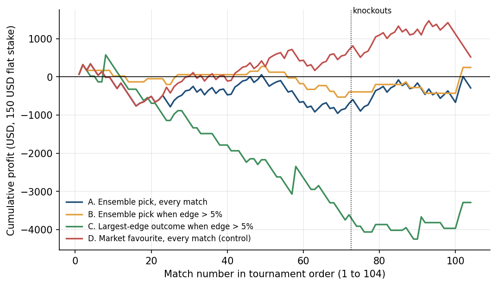
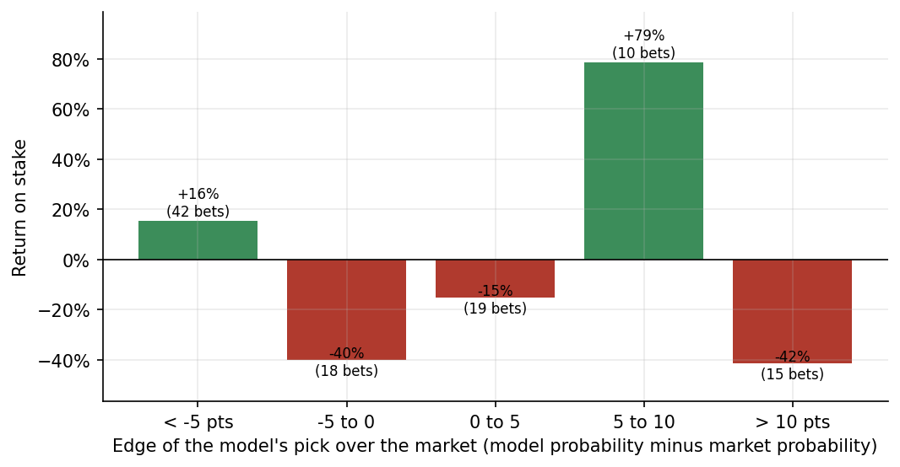

Executive report: Capstone Project for the Professional Certificate in Data Analytics.
Would a forecasting model, which was constructed using public match history, have produced better predictions than a prediction market, and would having traded the selections made by this model have resulted in a profit?
For the 2026 World Cup, I applied a statistical model to predict match outcomes and then placed those predictions on Polymarket, betting between 100 and 200 USD on each match. Since I never kept a record of the trades (other than the final profit I made), this report reconstructs the model using public data and examines it under controlled conditions: the classifier is trained solely on matches that took place before the first game, the ratings are updated one match at a time as new information becomes available at each kickoff, and each prediction is compared with the price that was recorded on Polymarket before the same kickoff. The testing includes all 104 matches.
The market proved to be the more accurate forecaster. The model correctly predicted the 90-minute result in 60.6% of the matches, having a Brier score of 0.535; Polymarket achieved 63.5% and a score of 0.495. This difference is mainly seen in the group stage (0.540 compared to 0.484) and nearly disappears in the knockout rounds (0.526 compared to 0.520). For the entire tournament, the difference is statistically significant since the bootstrap 95% confidence interval for the gap between the model's and the market's Brier scores extends from 0.010 to 0.070 and lies completely above zero. The two forecasters agreed on the favourite in 90% of the matches, and in the 10 instances where they disagreed, the market was correct five times and the model two.
Trading the picks would not have been profitable. If a flat stake of 150 USD was placed on the model's choice in each match, the result was a loss of 291 USD on 15,600 USD staked (a return of -1.9%). When the bets were limited to those matches in which the model's probability was more than five points higher than the market price, a profit of 246 USD was made on 3,750 USD staked (+6.6%), but this was based on 25 bets with a confidence interval ranging from -1,346 to +1,894 USD, which is no different from luck. However, the strategy of always backing the market favourite in each match, one that makes no use of the model, yielded a profit of 520 USD.
I suggest that you cease trading this model against liquid World Cup markets (a market which, as it turns out, did not require my assistance in pricing a football match), continue to use it as a standalone sanity check for market prices, and reallocate the modelling work to two areas in which a private model can still provide value, namely, the draw probabilities, since the model never takes them into account, and the inputs which are priced by the market but are not included in the public match history.
Prediction markets have now developed into a serious means of forecasting sports outcomes. On Polymarket, there was a dedicated market for each of the matches in the 2026 World Cup, with three types of contracts available for each one (a home win, a draw, and an away win), and the total volume for the 312 contracts examined in this study was 2.73 billion USD, which amounts to a median of 25.3 million USD per match. Prices in a well-liquid market are not mere expressions of personal opinion; they represent the combined judgement of thousands of traders risking money, and prices are constantly updated right up to the start of the match. Anyone who wishes to place a bet contrary to this view, whether they do so using a spreadsheet or with the aid of a machine learning model, is in effect asserting that they have some knowledge which the market itself lacks.
I made that assertion at the tournament. In the weeks leading up to the first match, I built a pipeline that collected historical international match results, calculated Elo ratings, trained both a gradient boosting classifier and a Poisson goals model, and produced probability estimates for each game. During the tournament, I compared these probabilities with Polymarket prices, looked for the cases in which my model was more confident than the market, and placed bets of about 100 to 200 USD on the outcome it favoured. This was a live experiment run without a lab notebook (call it "gambling"); I never saved records of my trades or the prices at the time I made each decision. Any memory I have of how it turned out is contaminated by hindsight, and by the income I somehow made anyway.
The project takes this informal experiment and turns it into one that can be verified. The business issue is the same one any analyst developing forecasting models faces: does a model built on cheap, public data perform sufficiently better than an established benchmark to justify action? Although the benchmark is particularly strong here, the question is the same as when a retailer tests whether its demand model outperforms the supplier's forecasts, or when a lender checks whether its credit model exceeds bureau scores. This question is suitable for a data-driven answer since all the components are public and complete. The tournament has now ended, so the actual outcomes for all 104 matches are known. Polymarket's API records the market prices at twelve-hour intervals from the day each market was opened. The training data include every officially recognised international match since 1872, and the analysis relies on no private dataset.
The remainder of the report follows the normal sequence. The Methods section outlines the two main data sources and one additional source, details the cleaning required to combine them, and explains the models used and the evaluation design, including the simulated betting rule used to replace my actual trades. The Results section provides descriptive statistics for both datasets, presents model performance on four years of pre-tournament matches, compares the models head-to-head with the market, and includes the betting simulation. The Conclusion comes back to the question mentioned above and states what I will do differently.
This section sets out the data, along with the cleaning and merging plan, the models, and the evaluation design, in that order. The entire process was carried out in Python (using pandas, scikit-learn, statsmodels, SciPy, and matplotlib), and the three data sources were kept in one SQLite database; the complete pipeline was run end to end via the five scripts listed in the appendix.
The analysis is carried by two independent sources, while the official fixture list is supplied by a third (Table 1). The first is the international results file in the martj42/international_results repository on GitHub, a CSV containing every senior men's international match acknowledged by the compiler, from the first England v Scotland fixture in 1872 to 2026-08-26. The second source is Polymarket; its public Gamma API includes one event for each World Cup match with three binary markets, and its CLOB API provides the historical price data for each market's Yes share. A Yes share pays out 1 USD when the outcome occurs, so the share price represents the market's probability of that outcome. The third source, openfootball's worldcup.json, is the official fixture and score list for the tournament, consisting of 104 rows and giving details of the stages, venues, and the 90-minute result. All row counts reported here were taken from the data files themselves on the access date given in the references; the descriptive text on the repository landing page lags behind the file it describes and reports a lower total for an earlier year, as do third-party mirrors of the dataset.
| Source | Role | Acquisition | Rows and columns | Key columns |
|---|---|---|---|---|
| International football results (martj42/international_results, GitHub) | Primary. Training corpus for ratings and models; official results of the 104 World Cup matches. | CSV download | 49,547 matches, 9 columns; 49,416 before 11 June 2026; 25,354 from 2000 onward used for model training | date, home_team, away_team, home_score, away_score, tournament, city, country, neutral |
| Polymarket match markets (Gamma API and CLOB API) | Primary. Independent benchmark: prices of the home-win, draw and away-win markets before kickoff. | REST API, one event per match, three markets per event, 12-hour price history | 312 markets; 28,247 price observations, 28,166 of them before kickoff; 11 market columns plus 5 price columns | event_slug, market_type, question, kickoff_utc, resolved_yes, volume_usd; ts, price |
| World Cup 2026 fixtures (openfootball/worldcup.json, GitHub) | Auxiliary. Stage, round, venue, half-time, full-time and extra-time scores; defines the 90-minute result used for evaluation. | JSON download | 104 matches, 17 columns | wc_match_id, date, stage, round, home_team, away_team, ft_home, ft_away, et_home, et_away, venue |
The merge key is the fixture, that is, the two teams involved and the date on which the game starts. This simple key required several alignment steps to work across the different sources (Table 2), three of which were important enough that missing them would affect the results. Since Polymarket settles its markets on the score following 90 minutes plus stoppage time, whereas the results file shows the score after extra time for knockout matches, the full-time score from openfootball is the one used for evaluation, and the match between Spain and Argentina is treated as a draw (0-0 after 90 minutes; 1-0 after extra time). Three evening kickoffs in North America take place on the following UTC day, which is the date Polymarket uses in its identifiers. In the results file, 13 matches involving the host nations are marked as non-neutral; in three of these, openfootball lists the host team second, so the model would have awarded the home advantage to the wrong side unless a correction was made.
| Issue | Where | Treatment |
|---|---|---|
| Team names differ between sources | "Bosnia & Herzegovina" and "USA" in openfootball versus "Bosnia and Herzegovina" and "United States" in the results file | Mapped to the results-file spelling before any join |
| Polymarket event slugs mix FIFA and ISO country codes | prt, hrv, che, cdr, cvi and kr instead of por, cro, sui, cod, cpv and kor; one slug labels Curaçao as kor | Code table built per team; text search by fixture as fallback; market type identified from the question text, never from the slug |
| Local versus UTC kickoff dates | Three evening kickoffs in North America carry the next calendar day in the Polymarket slug | Both the local date and the following day are tried when locating the event |
| Alternative team spellings in market questions | Türkiye, IR Iran, Côte d'Ivoire, Cabo Verde, Korea Republic | Alias table; event order (home, draw, away) used as a last resort |
| Extra-time scores in the results file | Knockout matches decided after 90 minutes are stored with the extra-time score (the final is 1-0, not 0-0) | The 90-minute score from openfootball is the evaluation target, because every Polymarket market resolves on 90 minutes plus stoppage time |
| Host-nation home advantage | The results file flags 13 matches of the United States, Mexico and Canada as non-neutral; openfootball lists the host second in three of them | Non-neutral flag taken from the results file; the three swapped fixtures are scored with the host as home team and the probabilities flipped back to fixture order |
| Fixtures scheduled after the tournament | 27 matches played between the final and the August snapshot of the results file | Excluded: only matches before 11 June 2026 enter training |
| Cross-source validation | Polymarket resolution versus official 90-minute result | All 312 markets resolved consistently with the official score; zero mismatches |
The combined evaluation table includes one row for each match, listing the fixture, the stage, the 90-minute score, the model's three probabilities, the three pre-kickoff prices and the market-derived probabilities. The pre-kickoff price is the last price recorded before kick-off, as stated in the market metadata. Since the archived history is sampled every 12 hours, this price is typically 7 hours before kick-off and in no case more than 12 hours before. It is a pre-match price, not the exact settlement line, which I will return to in the discussion. On average, the three prices for a match add up to 1.003 (ranging from 0.985 to 1.015), so the overround bookmakers include in their odds is essentially missing; I normalised the prices to sum to one for the probability comparisons and left them unchanged for the betting simulation. To verify the join, I checked each market's resolution flag against the official score and found that all 312 agreed.
The model consists of three components. The first of these is an Elo rating, which is calculated in chronological order based on the entire results file, in accordance with the rules used by the World Football Elo Ratings: this includes a K-factor that varies according to the importance of the match (20 in the case of friendly games, 40 for qualifiers, 50 for continental finals and 60 for World Cup finals), a multiplier based on goal difference, and 100 points as a result of home advantage when the venue is not neutral. Elo suits international football well because most teams play only a small number of matches, the fixture schedule is sparse, and updating the rating after each match uses all results without requiring a balanced schedule. Along with the rating, each team also has a short-form record showing points per match, goals scored, and goals conceded in its most recent five matches.
The second layer gives a prediction of the three possible results. The primary classifier used is scikit-learn's HistGradientBoostingClassifier, which has been trained on 25,354 matches from the year 2000 up to 10 June 2026 using nine features: the two Elo ratings, the difference in Elo ratings with and without home advantage, the Elo win expectancy, the home-advantage flag, the match-importance class, and the three form differences. Gradient boosting was selected because it can capture nonlinear relationships (for example, home advantage matters less when both teams have high ratings) without feature engineering, works with inputs on different scales, and produces probabilities that are sufficiently calibrated for this application. It is compared with a multinomial logistic regression using the same features, a logistic model based only on Elo expectancy, and the base rates. The third layer consists of a goals model: two Poisson regressions (one for home goals and one for away goals) based on the raw Elo difference, home advantage, and match importance, as described by Dixon and Coles (1997). By multiplying the two Poisson distributions together, a score matrix is obtained from which the same three outcome probabilities and the expected goals can be derived. The ensemble employed for the head-to-head comparison, and for the betting rule, is the simple average of the classifier's probabilities and the Poisson probabilities. The two components rarely reach different conclusions; averaging is merely a minor way to offset each component's idiosyncrasies and does not add accuracy.
Two evaluations were carried out. The first is a temporal hold-out in which the models are trained on matches from 2000 to 2021 and then assessed on the 4,576 matches that took place from January 2022 to 10 June 2026. This establishes that they perform well on matches they have not seen before and forms the basis for selecting between them. The second evaluation is the tournament itself. In this case, the classifier and the Poisson models were refitted on all matches that occurred before 11 June 2026 and then held fixed. The 104 fixtures were predicted in sequence; after each match, the Elo ratings and form records were updated with the result from the first 90 minutes, since this information was available before the next match began, but the model was not retrained during the tournament. This mirrors how the system was used in live conditions and eliminates the possibility of tournament information leaking into the training data.
The quality of forecasts is assessed using the accuracy of the most probable outcome, log loss, and the multi-class Brier score (Brier, 1950), which is the average of the sum of the squared errors across the three possible outcomes for each match, so that a forecast that assigns equal probabilities to all outcomes gives a score of 0.667 and a perfect forecast yields a score of zero. The Brier score is the main metric because it accounts for both discrimination and calibration and, unlike accuracy, penalises a forecaster who is confident but wrong. The market is scored on the same footing from its normalised probabilities. Because the comparison is paired, with a model score and a market score for each match, the uncertainty of the difference is estimated by randomly resampling the 104 per-match differences 10,000 times. Calibration is assessed by dividing all 312 outcome probabilities into six groups and comparing the average forecast with the actual frequency.
In the betting simulation, the trades that I had not documented are replaced by a rule that allows anyone to re-run them. With Strategy A, a stake of 150 USD, the midpoint of the amount I actually risked, is placed on the model's most probable outcome in each match, with the Yes share bought at the pre-kickoff price. If the predicted outcome occurs, the position yields a return equal to 150 divided by the price; if not, the stake is lost. Strategy B implements the same bet only when the model's probability for its chosen outcome exceeds the market's by more than five percentage points, which is the kind of filter I had applied informally. Strategy C bets on the outcome among the three with the greatest positive edge over the market, again requiring this edge to be more than five points, and it is included to check whether the model's disagreements with the market contain information regardless of which outcome they support. Strategy D always bets on the market favourite in each match and acts as the control case: it makes no use of the model and shows what the raw prices themselves returned during the tournament. Neither trading fees, slippage, nor position limits are taken into account; the results therefore represent an upper bound on what the rules would have earned.
This section starts with a descriptive account of the data, followed by the hold-out benchmark, the head-to-head comparison with the market, the betting simulation, and a discussion of what the numbers mean and where they are fragile.
Figure 1 illustrates the distribution of game results in the training data and in the tournament. Since 2000, in the 25,354 matches played, the first-named team wins about half the time at home and about 40% of the time on neutral ground, while draws make up 18% to 28% of matches depending on the situation. Draws in the World Cup finals from 2002 to 2022 occurred in 22.9% of the matches. The 2026 tournament saw 29 draws in 104 matches (27.9%), with 9 of the 32 knockout matches ending level after 90 minutes. This draw rate is high by historical standards and, as the following sections demonstrate, it is the single feature of this tournament that hurt both forecasters most. The number of goals was slightly above the training-era average: 2.88 per match compared to 2.76 since 2000.

Figure 2 and Table 9 show the ratings the model had at the start of the tournament. Spain (2226), Argentina (2189) and France (2129) were in the top positions, which aligned with the final being played between Spain and Argentina. Colombia and Ecuador are within the top eight, ahead of the Netherlands and Germany, suggesting the Elo system weights recent results in competitive matches more heavily than reputation.

The opening match is shown in Figure 3. Three contracts were launched on 7 April, nine weeks before the game, and their prices were recorded continuously until kick-off. During this time, the price for Mexico rose from 0.50 to around 0.69, while the draw and South Africa contract prices fell. Throughout the tournament, contracts opened between 6 April and 16 July 2026 (with the knockout markets opening only once the fixture was known), and the 12-hour price archive offers, on average, 90 observations before kick-off for each market.

Table 3 shows the temporal hold-out. All of the rating-based models show a substantial improvement over the base rates: accuracy increases from 47.8% to around 60%, and the Brier score drops from 0.633 to about 0.514. The four rating-based models differ by only a few thousandths, and most of the gain comes from Elo alone. Gradient boosting and logistic regression are effectively tied in this hold-out (0.5140 versus 0.5136), suggesting that the non-linearities the boosted model can learn add little at this level of feature detail. I have retained gradient boosting as the classifier since it was the one actually in use, and the comparison with the market should evaluate that system rather than a replacement; the hold-out result shows that this choice involves no measurable cost. One structural feature of all these models matters for what comes next: on the hold-out, the classifier assigned a draw as the most likely outcome in just 0.3% of matches, even though 22.9% of matches ended in a draw. It is rare for a three-way classifier to rank a draw first because its draw probability is rarely higher than both win probabilities; this is a known limitation of argmax selection, not a bug, and it matters in a tournament that includes 29 draws.
| Model | Accuracy | Log loss | Brier score |
|---|---|---|---|
| Base rates (train frequencies) | 47.8% | 1.050 | 0.633 |
| Elo only (logistic on Elo expectancy) | 60.1% | 0.884 | 0.519 |
| Multinomial logistic regression | 60.0% | 0.874 | 0.514 |
| HistGradientBoosting | 60.3% | 0.875 | 0.514 |
| Poisson goals model | 59.8% | 0.877 | 0.516 |
Table 4 and Figure 6 show the head-to-head results. The ensemble obtained a Brier score of 0.535 and a log loss of 0.906; Polymarket achieved 0.495 and 0.840, respectively. The market was also correct more frequently (63.5% compared to 60.6%). The gradient boosting component alone (0.534) and the Poisson component (0.539) lie on either side of the ensemble; both of them are behind the market. The paired bootstrap gives a mean difference between the model and the market in Brier score of 0.040, with a 95% interval ranging from 0.010 to 0.070. Since this interval does not include zero, the market's advantage is not due to a small-sample effect. When looking at each match individually, the model outperformed the market in 39% of the fixtures.
The section showing the results by stage is the most informative in the table. During the group stage, the market was clearly ahead (0.484 compared with 0.540); in the 32 knockout matches, the two figures are very close (0.520 versus 0.526), and in this case the model's accuracy is actually higher (59.4% compared with 56.2%). Two explanations account for this. On the one hand, by the knockout rounds the Elo ratings had absorbed three group-stage matches for each team, so the model had caught up with the form information the market had already priced in at the beginning. On the other hand, knockout matches between teams with similar ratings are harder for everyone, and the market had less advantage to work with than it did in pricing the mismatches of the group stage. Although 32 matches make the knockout-stage comparison too small to rank the two forecasters, it is sufficient to say that the model was not severely outperformed there.
| Forecaster | Accuracy | Log loss | Brier score | Brier, group stage (72) | Brier, knockouts (32) |
|---|---|---|---|---|---|
| Gradient boosting | 57.7% | 0.902 | 0.534 | 0.539 | 0.524 |
| Poisson goals | 60.6% | 0.915 | 0.539 | 0.543 | 0.530 |
| Ensemble | 60.6% | 0.906 | 0.535 | 0.540 | 0.526 |
| Polymarket | 63.5% | 0.840 | 0.495 | 0.484 | 0.520 |
| Uniform (1/3 each) | 44.2% | 1.099 | 0.667 | 0.667 | 0.667 |

Figure 4 shows the model's estimate for each outcome probability compared with the market. The two forecasting methods are very closely in agreement: in 90% of the matches the ensemble and the market had the same favourite, and in about two thirds of the cases both tended to favour the team named first. The discrepancies occur in the middle of the scale, between 0.25 and 0.50, where the model was often more confident than the market in its preferred side. This is precisely the area where the calibration curve in Figure 5 indicates the model is overconfident: in the (0.35, 0.45] interval, the model's forecasts averaged 0.40, whereas the outcome occurred 24% of the time. By contrast, in the same interval the market's forecasts averaged 0.39 and were realised 40% of the time. The market's calibration curve follows the diagonal in all the intervals. The model's curve, however, is irregular: it is too high in both the (0.15, 0.25] and (0.35, 0.45] intervals, too low in the (0.45, 0.6] interval, and there are only 29 to 35 observations per interval. The market is better calibrated, and it is this, more than any difference in the ranking of the teams, that gives rise to its advantage in terms of the Brier score.


Table 8 lists the 10 matches in which the model's choice differed from that of the market. The market was correct in five of these and the model in two. Five of the ten matches ended in a draw; in two of those the draw was the market's favourite outcome, and in the other three neither forecaster gained. In the two cases in which the model predicted correctly, both involved semi-final results: Spain defeating France and Argentina beating England as the second-named team, because the model's higher Elo rating for the teams that reached the final outweighed the market's preference for France and England. The model's poorest individual prediction was its incorrect call in the match between Ghana and Panama, in which it assigned Panama a 58% probability while the market gave it only 29%. Panama's rating going into the match was 1848, compared to Ghana's 1624, based on an unbeaten qualification campaign (seven wins and three draws in ten CONCACAF qualifiers) against opponents no stronger than Guatemala, Suriname and El Salvador. The market ignored that record and was right to do so: Panama had also suffered a 6-2 defeat at the hands of Brazil in a friendly twelve days before the tournament, a result which the Elo system absorbed as a single update.
| Date | Stage | Fixture | Score (90 min) | Result | Model pick | Market favourite |
|---|---|---|---|---|---|---|
| 2026-06-17 | Group | Ghana v Panama | 1-0 | home win | away win | home win |
| 2026-06-24 | Group | Switzerland v Canada | 2-1 | home win | away win | home win |
| 2026-06-25 | Group | Paraguay v Australia | 0-0 | draw | away win | draw |
| 2026-06-26 | Group | Egypt v Iran | 1-1 | draw | away win | home win |
| 2026-06-27 | Group | Algeria v Austria | 3-3 | draw | away win | draw |
| 2026-06-27 | Group | Colombia v Portugal | 0-0 | draw | home win | away win |
| 2026-07-03 | Knockout | Australia v Egypt | 1-1 | draw | home win | away win |
| 2026-07-05 | Knockout | Mexico v England | 2-3 | away win | home win | away win |
| 2026-07-14 | Knockout | France v Spain | 0-2 | away win | away win | home win |
| 2026-07-15 | Knockout | England v Argentina | 1-2 | away win | away win | home win |
Table 7 displays the results neither of the forecasters had anticipated. Five of the eight largest surprises were draws in which a clear favourite (Spain, Ecuador, Argentina, England, Switzerland) was held by an outsider (Cape Verde, Curaçao, Ghana, Qatar), and the model had assigned probabilities for those draws ranging from 7% to 16%. The model capped any draw at 0.30 and never chose it as its most likely outcome, which, in a tournament with 29 draws, limited how well it could possibly do. The highest draw probability in the market was 0.47 (Algeria v Austria, which finished 3-3), and the market selected the draw as its favourite two times.
| Date | Fixture | Score (90 min) | Result | Market price of the result | Model probability of the result |
|---|---|---|---|---|---|
| 2026-06-15 | Spain v Cape Verde | 0-0 | draw | 0.060 | 0.073 |
| 2026-06-20 | Ecuador v Curaçao | 0-0 | draw | 0.095 | 0.107 |
| 2026-07-03 | Argentina v Cape Verde | 1-1 | draw | 0.105 | 0.096 |
| 2026-06-23 | England v Ghana | 0-0 | draw | 0.125 | 0.121 |
| 2026-06-13 | Qatar v Switzerland | 1-1 | draw | 0.135 | 0.159 |
| 2026-06-24 | South Africa v South Korea | 1-0 | home win | 0.165 | 0.177 |
| 2026-06-25 | Ecuador v Germany | 2-1 | home win | 0.172 | 0.299 |
| 2026-06-13 | Australia v Turkey | 2-0 | home win | 0.175 | 0.288 |
Table 5 and Figure 7 show the results that the four betting strategies would have obtained. Strategy A, which is the one most similar to the approach I took, ended up losing 291 USD on a stake of 15,600 USD, giving a return of -1.9% and a hit rate of 60.6% at an average price of 0.60; the bootstrap interval for its total profit ranged from -2,879 to +2,278 USD. Its path included a loss of 698 USD over the 72 group matches, reaching a low of -955 USD, before it gained 407 USD over the 32 knockout matches, consistent with the stage split in the Brier scores. Strategy B, the five-point edge filter, made 25 bets and returned +246 USD (+6.6%), having 13 wins at an average price of 0.44 and a confidence interval extending from -1,346 to +1,894 USD; it lost 394 USD in the group stage and earned all of its profit from 6 knockout bets, two of which were the semi-final predictions mentioned above. Strategy C, which backed the option with the largest edge regardless of the outcome it favoured, is the clearest verdict on the model's disagreements with the market: it placed 65 bets, had a hit rate of 24.6%, and lost 3,290 USD (-33.7%). Where the model identified the most value, mainly on underdogs and the ten draws it backed, it was most often wrong. The control, Strategy D, achieved a return of +520 USD (+3.3%) by selecting the favourite at the raw prices; favourites won 63.5% of the matches at an average price of 0.62, so the market itself was, if anything, slightly underpricing the favourites during this tournament.
| Strategy | Bets | Wins | Hit rate | Average price paid | Staked | Profit | Return on stake | 95% CI low | 95% CI high | Max drawdown |
|---|---|---|---|---|---|---|---|---|---|---|
| A. Ensemble pick, every match | 104 | 63 | 60.6% | 0.603 | 15,600 | -291 | -1.9% | -2,879 | +2,278 | -1,297 |
| A. Gradient boosting pick, every match | 104 | 60 | 57.7% | 0.593 | 15,600 | -1,105 | -7.1% | -3,686 | +1,505 | -2,029 |
| A. Poisson goals pick, every match | 104 | 63 | 60.6% | 0.605 | 15,600 | -291 | -1.9% | -2,879 | +2,278 | -1,297 |
| B. Ensemble pick when edge > 5% | 25 | 13 | 52.0% | 0.438 | 3,750 | +246 | +6.6% | -1,346 | +1,894 | -848 |
| C. Largest-edge outcome when edge > 5% | 65 | 16 | 24.6% | 0.254 | 9,750 | -3,290 | -33.7% | -6,358 | +226 | -4,824 |
| D. Market favourite, every match (control) | 104 | 66 | 63.5% | 0.617 | 15,600 | +520 | +3.3% | -2,029 | +3,068 | -1,106 |

Figure 8 and Table 6 examine whether the extent to which the model's estimate exceeded that of the market predicted the results of the bets made under Strategy A. It did not, in any monotonic way: in the cases where the model was more than five points below the market on its own selection, the return was +16% (these are matches in which both agreed on the favourite and the market was the more confident of the two); for the cases with a five-to-ten point edge, the return was +79% based on 10 bets; and for those with an edge of more than ten points, the return was -42% based on 15. A useful indicator would have shown returns increasing as the edge increased. What the chart displays is noise around a very slightly negative average, with one favourable category small enough to be due to chance.

Three findings carry the report. The market forecast proved to be better than the model, a difference which remains significant after a paired bootstrap analysis; this advantage was primarily due to calibration in the group stage and to the model's inherent inability to favour draws; and none of the four betting rules generated a return that could be distinguished from random chance, the one that most directly expressed "bet where the model disagrees with the market" losing a third of its stake. These findings agree with one another and with the economic characteristics of the setting. A market with a median volume of 25 million USD per match has already absorbed the public results history on which the model was built, along with squad news, injuries, line-ups, weather conditions, and specialist forecasters' views. Because the model relies solely on match results, it uses only a subset of the information available to the market, and a subset cannot consistently outperform the whole.
The limitations apply in both directions. Regarding the model, it does not use player-level information, nor club form, nor market data as features, and its five-match form window is rather crude for international teams. As for the conclusions, the sample size of 104 matches is small when it comes to betting returns, as the confidence intervals show, and the tournament's 28% draw rate was untypical, which had a greater negative impact on a draw-averse model than it would have in an ordinary year. Two aspects of the price data warrant attention. The pre-kickoff price is a median of 7 hours before kick-off, so news about the line-up released in the final hours is not included; this makes the market appear slightly weaker than its actual closing state, not stronger, and therefore does not rescue the model. Also, the simulation ignores fees and slippage, which means every strategy appears better than it would have been in practice. Both of these biases work against the model's case and therefore strengthen rather than weaken the conclusion. Finally, the ensemble and the Poisson model differed in their choice in only two matches, both of which ended in a draw, so both bets lost and the betting results for those two entries in Table 5 are identical; the classifier on its own performed worse.
It was to be determined whether a forecasting model developed from public match history outperformed Polymarket in predicting the results at the 2026 World Cup, and whether trading the model's predictions would have been profitable. Across all 104 matches, the answer to both questions is negative. The model was a competent forecaster in an absolute sense, achieving 60.6% accuracy and a Brier score of 0.535, consistent with its four-year hold-out and considerably better than the base rates. The market performed better, with 63.5% accuracy and a Brier score of 0.495; the difference was significant across the tournament and most evident in the group stage, where the market's better calibration showed. The model never ranked a draw as its first choice, and 29 draws occurred in the tournament. When the model's predictions were backed at a flat 150 USD, the result was a return of -1.9%; when only the cases where the model differed from the market by more than five points were backed, the return was +6.6% over 25 bets, on an interval that also covers substantial losses; and when the model's largest disagreements were backed, the result was -33.7%.
The work itself held up. Three public sources were joined on a fixture key after discrepancies of naming, time zone and rule definition had been resolved, and the join was verified by comparing each market's resolution with the official score. The model was trained with a hard cut-off before the tournament, and its ratings were updated only with information available at each kickoff. The betting rules are explicit and can be re-run, which my original trades cannot (the undocumented ones, for the record, finished the tournament ahead by roughly 8,000 USD, on a method consisting of watching the matches live and trusting my stomach, which is unrepeatable, indefensible, and the reason this reconstruction exists at all).
Four changes follow. First, I will not trade this model, or any model based solely on match results, against liquid World Cup or major-tournament markets, since the market price is the better forecast and should be treated as such. Second, when I build a forecasting model I will record the benchmark forecast and my decision at the moment I make it, so that the next evaluation does not have to be carried out from scratch; a table with a timestamp, the model's probabilities and the market price would have turned this report into a one-week task rather than a full rebuild. Third, the next version of the model should target the two gaps this test exposed: a separate draw model, since the argmax selection systematically ignores the outcome that occurred 28% of the time, and the features the market prices but match history does not contain, beginning with squad market values and the club-level form of the players called up. Fourth, if the objective is to identify markets where a private model provides value, the place to look is where liquidity is thin, such as qualifiers, friendlies and lower-tier tournaments, and the way to look is with a pre-registered rule and a paper ledger before any money is staked. The 2026 World Cup was a good place to learn that lesson and an expensive place to keep testing it.
The pipeline is five scripts run in order from the repository root. 00_verify_sources.py contacts the three sources, reports their status, row counts and date ranges, and checks the local copies against them. 01_build_database.py downloads the sources and writes wc2026.db (tables: matches_history, wc2026_matches, polymarket_markets, polymarket_prices). 02_model.py computes the Elo and form features, runs the hold-out benchmark, fits the final models and predicts the 104 matches (tables: elo_pre_tournament, model_predictions). 03_evaluate.py merges the predictions with the pre-kickoff prices, computes all metrics and the betting simulation, and draws the figures (table: evaluation). 04_build_report.py renders this page from the computed results, so that every figure quoted in the text is generated rather than transcribed. Random seeds are fixed; the only element outside my control is the Polymarket API, whose archived prices could in principle be revised, which is why raw copies of every source are kept in the data folder.
| Overall Elo rank | Team | Elo on 10 June 2026 |
|---|---|---|
| 1 | Spain | 2226 |
| 2 | Argentina | 2189 |
| 3 | France | 2129 |
| 4 | England | 2094 |
| 5 | Brazil | 2069 |
| 6 | Colombia | 2063 |
| 7 | Portugal | 2059 |
| 8 | Ecuador | 2026 |
| 9 | Netherlands | 2009 |
| 10 | Germany | 2000 |
| # | Date | Stage | Fixture | Score | Result | Model H | Model D | Model A | Market H | Market D | Market A | Model pick |
|---|---|---|---|---|---|---|---|---|---|---|---|---|
| 1 | 2026-06-11 | Group | Mexico v South Africa | 2-0 | H | 0.82 | 0.13 | 0.05 | 0.69 | 0.21 | 0.11 | H |
| 2 | 2026-06-11 | Group | South Korea v Czech Republic | 2-1 | H | 0.45 | 0.28 | 0.28 | 0.37 | 0.31 | 0.31 | H |
| 7 | 2026-06-12 | Group | Canada v Bosnia and Herzegovina | 1-1 | D | 0.74 | 0.17 | 0.09 | 0.53 | 0.27 | 0.20 | H |
| 19 | 2026-06-12 | Group | United States v Paraguay | 4-1 | H | 0.38 | 0.28 | 0.35 | 0.47 | 0.30 | 0.24 | H |
| 8 | 2026-06-13 | Group | Qatar v Switzerland | 1-1 | D | 0.11 | 0.16 | 0.74 | 0.06 | 0.13 | 0.81 | A |
| 13 | 2026-06-13 | Group | Brazil v Morocco | 1-1 | D | 0.45 | 0.27 | 0.28 | 0.58 | 0.26 | 0.17 | H |
| 14 | 2026-06-13 | Group | Haiti v Scotland | 0-1 | A | 0.21 | 0.25 | 0.54 | 0.17 | 0.21 | 0.62 | A |
| 20 | 2026-06-13 | Group | Australia v Turkey | 2-0 | H | 0.29 | 0.27 | 0.44 | 0.17 | 0.25 | 0.57 | A |
| 25 | 2026-06-14 | Group | Germany v Curaçao | 7-1 | H | 0.82 | 0.13 | 0.05 | 0.94 | 0.04 | 0.02 | H |
| 26 | 2026-06-14 | Group | Ivory Coast v Ecuador | 1-0 | H | 0.18 | 0.24 | 0.58 | 0.29 | 0.33 | 0.37 | A |
| 31 | 2026-06-14 | Group | Netherlands v Japan | 2-2 | D | 0.39 | 0.27 | 0.34 | 0.47 | 0.27 | 0.26 | H |
| 32 | 2026-06-14 | Group | Sweden v Tunisia | 5-1 | H | 0.43 | 0.27 | 0.30 | 0.51 | 0.28 | 0.20 | H |
| 37 | 2026-06-15 | Group | Belgium v Egypt | 1-1 | D | 0.53 | 0.25 | 0.22 | 0.61 | 0.23 | 0.15 | H |
| 38 | 2026-06-15 | Group | Iran v New Zealand | 2-2 | D | 0.60 | 0.23 | 0.17 | 0.53 | 0.27 | 0.19 | H |
| 43 | 2026-06-15 | Group | Spain v Cape Verde | 0-0 | D | 0.90 | 0.07 | 0.02 | 0.91 | 0.06 | 0.03 | H |
| 44 | 2026-06-15 | Group | Saudi Arabia v Uruguay | 1-1 | D | 0.14 | 0.22 | 0.65 | 0.11 | 0.22 | 0.66 | A |
| 49 | 2026-06-16 | Group | France v Senegal | 3-1 | H | 0.60 | 0.22 | 0.18 | 0.66 | 0.21 | 0.12 | H |
| 50 | 2026-06-16 | Group | Iraq v Norway | 1-4 | A | 0.15 | 0.22 | 0.63 | 0.06 | 0.13 | 0.82 | A |
| 55 | 2026-06-16 | Group | Argentina v Algeria | 3-0 | H | 0.70 | 0.20 | 0.10 | 0.65 | 0.23 | 0.13 | H |
| 56 | 2026-06-16 | Group | Austria v Jordan | 3-1 | H | 0.57 | 0.22 | 0.21 | 0.71 | 0.18 | 0.10 | H |
| 61 | 2026-06-17 | Group | Portugal v DR Congo | 1-1 | D | 0.71 | 0.19 | 0.10 | 0.75 | 0.17 | 0.07 | H |
| 62 | 2026-06-17 | Group | Uzbekistan v Colombia | 1-3 | A | 0.15 | 0.22 | 0.62 | 0.10 | 0.20 | 0.71 | A |
| 67 | 2026-06-17 | Group | England v Croatia | 4-2 | H | 0.49 | 0.26 | 0.25 | 0.57 | 0.26 | 0.18 | H |
| 68 | 2026-06-17 | Group | Ghana v Panama | 1-0 | H | 0.18 | 0.24 | 0.58 | 0.41 | 0.29 | 0.29 | A |
| 3 | 2026-06-18 | Group | Czech Republic v South Africa | 1-1 | D | 0.52 | 0.26 | 0.23 | 0.53 | 0.27 | 0.21 | H |
| 4 | 2026-06-18 | Group | Mexico v South Korea | 1-0 | H | 0.58 | 0.25 | 0.17 | 0.47 | 0.29 | 0.23 | H |
| 9 | 2026-06-18 | Group | Switzerland v Bosnia and Herzegovina | 4-1 | H | 0.69 | 0.19 | 0.13 | 0.62 | 0.23 | 0.14 | H |
| 10 | 2026-06-18 | Group | Canada v Qatar | 6-0 | H | 0.78 | 0.15 | 0.07 | 0.76 | 0.16 | 0.07 | H |
| 15 | 2026-06-19 | Group | Scotland v Morocco | 0-1 | A | 0.24 | 0.27 | 0.49 | 0.17 | 0.27 | 0.57 | A |
| 16 | 2026-06-19 | Group | Brazil v Haiti | 3-0 | H | 0.77 | 0.16 | 0.07 | 0.88 | 0.08 | 0.04 | H |
| 21 | 2026-06-19 | Group | United States v Australia | 2-0 | H | 0.38 | 0.28 | 0.34 | 0.61 | 0.22 | 0.18 | H |
| 22 | 2026-06-19 | Group | Turkey v Paraguay | 0-1 | A | 0.43 | 0.29 | 0.28 | 0.47 | 0.29 | 0.25 | H |
| 27 | 2026-06-20 | Group | Germany v Ivory Coast | 2-1 | H | 0.56 | 0.24 | 0.20 | 0.65 | 0.20 | 0.15 | H |
| 28 | 2026-06-20 | Group | Ecuador v Curaçao | 0-0 | D | 0.84 | 0.11 | 0.05 | 0.87 | 0.10 | 0.04 | H |
| 33 | 2026-06-20 | Group | Netherlands v Sweden | 5-1 | H | 0.60 | 0.24 | 0.16 | 0.56 | 0.23 | 0.20 | H |
| 34 | 2026-06-20 | Group | Tunisia v Japan | 0-4 | A | 0.11 | 0.19 | 0.69 | 0.11 | 0.21 | 0.67 | A |
| 39 | 2026-06-21 | Group | Belgium v Iran | 0-0 | D | 0.43 | 0.28 | 0.29 | 0.67 | 0.20 | 0.12 | H |
| 40 | 2026-06-21 | Group | New Zealand v Egypt | 1-3 | A | 0.27 | 0.27 | 0.47 | 0.15 | 0.23 | 0.61 | A |
| 45 | 2026-06-21 | Group | Spain v Saudi Arabia | 4-0 | H | 0.86 | 0.10 | 0.04 | 0.89 | 0.07 | 0.04 | H |
| 46 | 2026-06-21 | Group | Uruguay v Cape Verde | 2-2 | D | 0.71 | 0.18 | 0.11 | 0.67 | 0.22 | 0.10 | H |
| 51 | 2026-06-22 | Group | France v Iraq | 3-0 | H | 0.81 | 0.14 | 0.05 | 0.90 | 0.07 | 0.02 | H |
| 52 | 2026-06-22 | Group | Norway v Senegal | 3-2 | H | 0.49 | 0.27 | 0.24 | 0.44 | 0.27 | 0.28 | H |
| 57 | 2026-06-22 | Group | Argentina v Austria | 2-0 | H | 0.70 | 0.20 | 0.10 | 0.67 | 0.21 | 0.11 | H |
| 58 | 2026-06-22 | Group | Jordan v Algeria | 1-2 | A | 0.23 | 0.26 | 0.51 | 0.14 | 0.22 | 0.63 | A |
| 63 | 2026-06-23 | Group | Portugal v Uzbekistan | 5-0 | H | 0.64 | 0.22 | 0.13 | 0.85 | 0.10 | 0.04 | H |
| 64 | 2026-06-23 | Group | Colombia v DR Congo | 1-0 | H | 0.71 | 0.18 | 0.11 | 0.63 | 0.24 | 0.14 | H |
| 69 | 2026-06-23 | Group | England v Ghana | 0-0 | D | 0.84 | 0.12 | 0.04 | 0.82 | 0.12 | 0.05 | H |
| 70 | 2026-06-23 | Group | Panama v Croatia | 0-1 | A | 0.23 | 0.26 | 0.51 | 0.12 | 0.22 | 0.66 | A |
| 5 | 2026-06-24 | Group | Czech Republic v Mexico | 0-3 | A | 0.09 | 0.20 | 0.72 | 0.22 | 0.24 | 0.55 | A |
| 6 | 2026-06-24 | Group | South Africa v South Korea | 1-0 | H | 0.18 | 0.24 | 0.58 | 0.17 | 0.26 | 0.58 | A |
| 11 | 2026-06-24 | Group | Switzerland v Canada | 2-1 | H | 0.28 | 0.30 | 0.42 | 0.40 | 0.31 | 0.28 | A |
| 12 | 2026-06-24 | Group | Bosnia and Herzegovina v Qatar | 3-1 | H | 0.47 | 0.27 | 0.26 | 0.71 | 0.18 | 0.12 | H |
| 17 | 2026-06-24 | Group | Scotland v Brazil | 0-3 | A | 0.19 | 0.24 | 0.57 | 0.09 | 0.16 | 0.74 | A |
| 18 | 2026-06-24 | Group | Morocco v Haiti | 4-2 | H | 0.77 | 0.15 | 0.07 | 0.82 | 0.12 | 0.05 | H |
| 23 | 2026-06-25 | Group | Turkey v United States | 3-2 | H | 0.22 | 0.26 | 0.52 | 0.24 | 0.21 | 0.54 | A |
| 24 | 2026-06-25 | Group | Paraguay v Australia | 0-0 | D | 0.35 | 0.28 | 0.37 | 0.36 | 0.42 | 0.21 | A |
| 29 | 2026-06-25 | Group | Curaçao v Ivory Coast | 0-2 | A | 0.15 | 0.19 | 0.66 | 0.05 | 0.12 | 0.83 | A |
| 30 | 2026-06-25 | Group | Ecuador v Germany | 2-1 | H | 0.30 | 0.27 | 0.43 | 0.17 | 0.19 | 0.64 | A |
| 35 | 2026-06-25 | Group | Japan v Sweden | 1-1 | D | 0.66 | 0.20 | 0.14 | 0.51 | 0.28 | 0.21 | H |
| 36 | 2026-06-25 | Group | Tunisia v Netherlands | 1-3 | A | 0.10 | 0.17 | 0.73 | 0.03 | 0.08 | 0.89 | A |
| 41 | 2026-06-26 | Group | Egypt v Iran | 1-1 | D | 0.34 | 0.27 | 0.39 | 0.36 | 0.36 | 0.27 | A |
| 42 | 2026-06-26 | Group | New Zealand v Belgium | 1-5 | A | 0.15 | 0.22 | 0.63 | 0.06 | 0.11 | 0.82 | A |
| 47 | 2026-06-26 | Group | Cape Verde v Saudi Arabia | 0-0 | D | 0.36 | 0.28 | 0.36 | 0.36 | 0.28 | 0.35 | H |
| 48 | 2026-06-26 | Group | Uruguay v Spain | 0-1 | A | 0.13 | 0.21 | 0.66 | 0.14 | 0.25 | 0.60 | A |
| 53 | 2026-06-26 | Group | Norway v France | 1-4 | A | 0.23 | 0.27 | 0.50 | 0.20 | 0.20 | 0.59 | A |
| 54 | 2026-06-26 | Group | Senegal v Iraq | 5-0 | H | 0.59 | 0.23 | 0.18 | 0.79 | 0.13 | 0.07 | H |
| 59 | 2026-06-27 | Group | Algeria v Austria | 3-3 | D | 0.35 | 0.28 | 0.37 | 0.28 | 0.47 | 0.26 | A |
| 60 | 2026-06-27 | Group | Jordan v Argentina | 1-3 | A | 0.04 | 0.08 | 0.88 | 0.04 | 0.09 | 0.86 | A |
| 65 | 2026-06-27 | Group | Colombia v Portugal | 0-0 | D | 0.40 | 0.27 | 0.33 | 0.26 | 0.24 | 0.49 | H |
| 66 | 2026-06-27 | Group | DR Congo v Uzbekistan | 3-1 | H | 0.37 | 0.26 | 0.37 | 0.61 | 0.22 | 0.16 | H |
| 71 | 2026-06-27 | Group | Panama v England | 0-2 | A | 0.12 | 0.19 | 0.69 | 0.05 | 0.11 | 0.85 | A |
| 72 | 2026-06-27 | Group | Croatia v Ghana | 2-1 | H | 0.69 | 0.19 | 0.12 | 0.52 | 0.30 | 0.18 | H |
| 73 | 2026-06-28 | Knockout | South Africa v Canada | 0-1 | A | 0.24 | 0.26 | 0.50 | 0.15 | 0.25 | 0.59 | A |
| 74 | 2026-06-29 | Knockout | Germany v Paraguay | 1-1 | D | 0.47 | 0.27 | 0.25 | 0.72 | 0.18 | 0.09 | H |
| 75 | 2026-06-29 | Knockout | Netherlands v Morocco | 1-1 | D | 0.40 | 0.28 | 0.33 | 0.40 | 0.31 | 0.28 | H |
| 76 | 2026-06-29 | Knockout | Brazil v Japan | 2-1 | H | 0.50 | 0.26 | 0.24 | 0.57 | 0.26 | 0.18 | H |
| 77 | 2026-06-30 | Knockout | France v Sweden | 3-0 | H | 0.77 | 0.16 | 0.07 | 0.77 | 0.16 | 0.08 | H |
| 78 | 2026-06-30 | Knockout | Ivory Coast v Norway | 1-2 | A | 0.24 | 0.26 | 0.50 | 0.26 | 0.28 | 0.45 | A |
| 79 | 2026-06-30 | Knockout | Mexico v Ecuador | 2-0 | H | 0.50 | 0.28 | 0.22 | 0.43 | 0.33 | 0.23 | H |
| 80 | 2026-07-01 | Knockout | England v DR Congo | 2-1 | H | 0.70 | 0.19 | 0.10 | 0.76 | 0.18 | 0.05 | H |
| 81 | 2026-07-01 | Knockout | United States v Bosnia and Herzegovina | 2-0 | H | 0.70 | 0.19 | 0.10 | 0.70 | 0.19 | 0.10 | H |
| 82 | 2026-07-01 | Knockout | Belgium v Senegal | 2-2 | D | 0.44 | 0.27 | 0.29 | 0.45 | 0.29 | 0.25 | H |
| 83 | 2026-07-02 | Knockout | Portugal v Croatia | 2-1 | H | 0.47 | 0.27 | 0.26 | 0.56 | 0.26 | 0.17 | H |
| 84 | 2026-07-02 | Knockout | Spain v Austria | 3-0 | H | 0.72 | 0.19 | 0.09 | 0.74 | 0.18 | 0.08 | H |
| 85 | 2026-07-02 | Knockout | Switzerland v Algeria | 2-0 | H | 0.47 | 0.27 | 0.25 | 0.49 | 0.30 | 0.21 | H |
| 86 | 2026-07-03 | Knockout | Argentina v Cape Verde | 1-1 | D | 0.87 | 0.10 | 0.03 | 0.86 | 0.11 | 0.04 | H |
| 87 | 2026-07-03 | Knockout | Colombia v Ghana | 1-0 | H | 0.79 | 0.15 | 0.07 | 0.68 | 0.21 | 0.10 | H |
| 88 | 2026-07-03 | Knockout | Australia v Egypt | 1-1 | D | 0.43 | 0.28 | 0.29 | 0.26 | 0.33 | 0.40 | H |
| 89 | 2026-07-04 | Knockout | Paraguay v France | 0-1 | A | 0.13 | 0.21 | 0.66 | 0.04 | 0.12 | 0.83 | A |
| 90 | 2026-07-04 | Knockout | Canada v Morocco | 0-3 | A | 0.21 | 0.25 | 0.54 | 0.16 | 0.28 | 0.55 | A |
| 91 | 2026-07-05 | Knockout | Brazil v Norway | 1-2 | A | 0.49 | 0.26 | 0.25 | 0.54 | 0.26 | 0.20 | H |
| 92 | 2026-07-05 | Knockout | Mexico v England | 2-3 | A | 0.39 | 0.29 | 0.32 | 0.30 | 0.31 | 0.40 | H |
| 93 | 2026-07-06 | Knockout | Portugal v Spain | 0-1 | A | 0.23 | 0.26 | 0.51 | 0.22 | 0.26 | 0.51 | A |
| 94 | 2026-07-06 | Knockout | United States v Belgium | 1-4 | A | 0.42 | 0.29 | 0.29 | 0.38 | 0.27 | 0.34 | H |
| 95 | 2026-07-07 | Knockout | Argentina v Egypt | 3-2 | H | 0.73 | 0.18 | 0.09 | 0.72 | 0.19 | 0.08 | H |
| 96 | 2026-07-07 | Knockout | Switzerland v Colombia | 0-0 | D | 0.28 | 0.27 | 0.45 | 0.26 | 0.31 | 0.42 | A |
| 97 | 2026-07-09 | Knockout | France v Morocco | 2-0 | H | 0.55 | 0.24 | 0.21 | 0.62 | 0.25 | 0.14 | H |
| 98 | 2026-07-10 | Knockout | Spain v Belgium | 2-1 | H | 0.62 | 0.21 | 0.16 | 0.60 | 0.24 | 0.16 | H |
| 99 | 2026-07-11 | Knockout | Norway v England | 1-1 | D | 0.25 | 0.28 | 0.47 | 0.25 | 0.26 | 0.50 | A |
| 100 | 2026-07-11 | Knockout | Argentina v Switzerland | 1-1 | D | 0.58 | 0.22 | 0.19 | 0.57 | 0.27 | 0.16 | H |
| 101 | 2026-07-14 | Knockout | France v Spain | 0-2 | A | 0.35 | 0.27 | 0.38 | 0.40 | 0.30 | 0.30 | A |
| 102 | 2026-07-15 | Knockout | England v Argentina | 1-2 | A | 0.32 | 0.27 | 0.41 | 0.35 | 0.33 | 0.32 | A |
| 103 | 2026-07-18 | Knockout | France v England | 4-6 | A | 0.45 | 0.28 | 0.27 | 0.51 | 0.24 | 0.24 | H |
| 104 | 2026-07-19 | Knockout | Spain v Argentina | 0-0 | D | 0.46 | 0.27 | 0.26 | 0.42 | 0.31 | 0.26 | H |
Brier, G. W. (1950). Verification of forecasts expressed in terms of probability. Monthly Weather Review, 78(1), 1-3.
Dixon, M. J. and Coles, S. G. (1997). Modelling association football scores and inefficiencies in the football betting market. Journal of the Royal Statistical Society: Series C, 46(2), 265-280.
Jürisoo, M. (martj42). International football results from 1872 to the present. GitHub repository, github.com/martj42/international_results. Accessed 10 September 2026.
openfootball. World Cup 2026 fixtures and results in JSON. GitHub repository, github.com/openfootball/worldcup.json. Accessed 10 September 2026.
Pedregosa, F. et al. (2011). Scikit-learn: machine learning in Python. Journal of Machine Learning Research, 12, 2825-2830.
Polymarket. Developer documentation for the Gamma and CLOB APIs, docs.polymarket.com. Accessed 10 September 2026.
World Football Elo Ratings. About the rating system, eloratings.net/about. Accessed 10 September 2026.